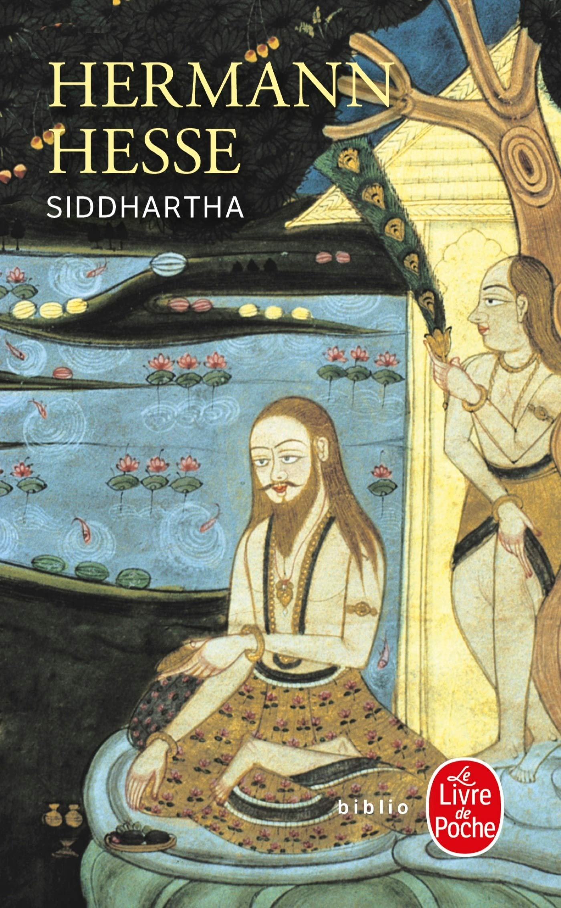
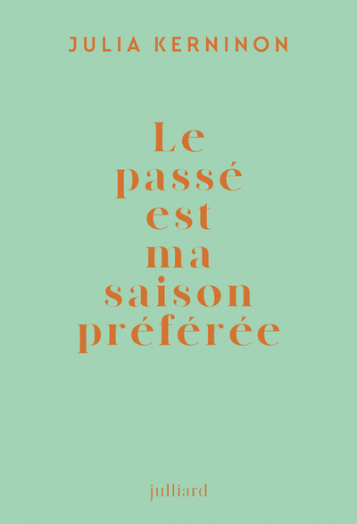
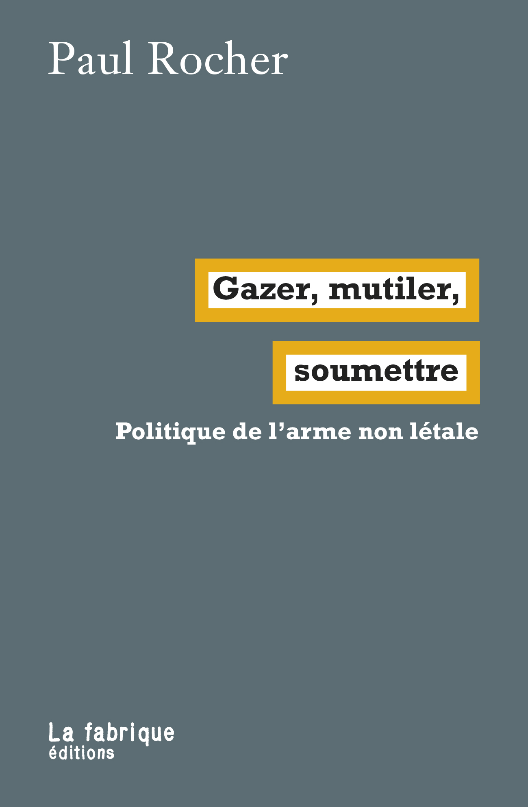
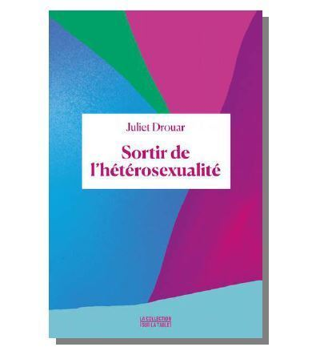
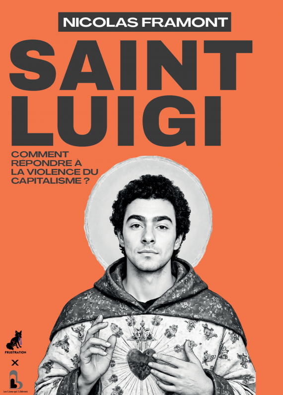
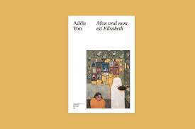
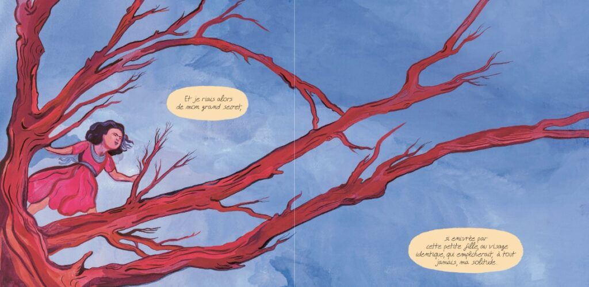
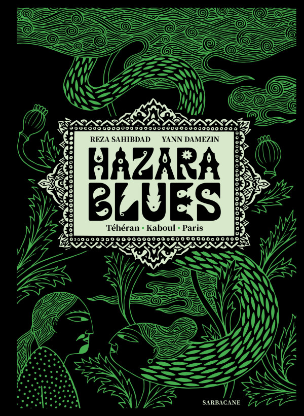
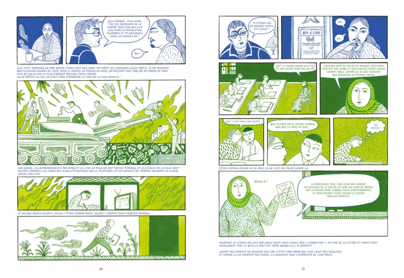
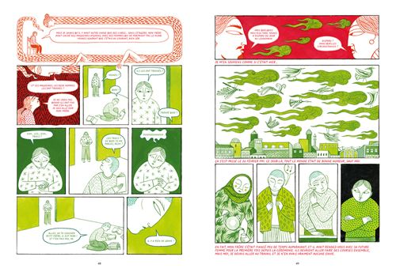

A:
E! It has been four years (!!) since you replied to me, and although I kept meaning to get back to you, only now did I feel the urge to respond on this rainy day. It might be because I was looking at our old projects.
So much has happened in these four years: I moved to Minneapolis for work for the Walker then fell in love with the mountains and Colorado (sigh, Figure 11 & 12) .
I do feel the passing of time since the start of our conversation, and it might be because so much has changed over the past few years in my life. It makes me wonder if we only feel the passage of time when there is a significant change in our surroundings or within ourselves. Is it the losses or the gains that make us more aware that time has passed?
17 April 2026

Siddhartha, Hermann Hesse - Éd livre de poche, 1922

Le passé est ma saison préférée, Julia Kerninon - Éd Julliard :)
E:
It has been some time since we last corresponded here. 592 days to be exact. Yet while that is an exact number, I find that our experience of time has warped in strange ways over the past year and a half — it somehow feels both immensely short and long at the same time.
Time dilation, as it relates to our human experience has always been an interesting subject. Einstein’s theory of relativity explores this scientifically (Figure 10). But for us, time passing has much more of a psychological or emotional impact — months pass in an instant, yet a day may take forever to pass.
Perhaps there isn’t a really good answer for how we experience time. I am just thinking about all of society’s attempts to make sense of this, and how at its core, Under Consideration is a project about communicating across time.
The fact that the conversation continues after some 592 days of silence is only marked in a time stamp at the bottom of the text. The actual conversation continues to flow seemingly naturally.
1 November 2021

Figure 10: Einstein’s Theory of Relativity
N:
Do you know
this
are.na channel? I just discovered it. There are quite a few gems in there, such as “shed rationality,” “forget ‘time,’ or just ignore it,” or “learn to love the finite, ignore the apparently infinite.”
I am finding it extremely difficult to be productive and creative when my mind is racing through so many thoughts and so many unknowns in these circumstances .. Yet last night, or even now as I am writing this, I realized being creative — or perhaps being instinctual! — does offer great comfort. If you were to ask me this question maybe a month ago, I would have definitely said concept should be at the forefront and instincts should somehow align with the reasoning, and successful artists have two of these go hand in hand. Yet, now, as I am writing this to you from my home desk, pure creative energy without any reasoning is all we (I) have. I guess I decided to let go a little and “shed rationality.” Here is a picture (Figure 9) from my rooftop where I have been painting (with no plans!) to distract myself. Missed all your faces dearly, E!
19 March 2020

Figure 9: Nazlı's DIY rooftop desk
E:
11 months later… This past halloween, I dressed up as
Multi
and took a picture in front of an installation of Gonzalez-Torres' Perfect Lovers at MoMA (Figure 8).
In thinking about our conversation beforehand, coupled with our conversation with Sydney King tonight, I am adding the image. I am curious about where the line we draw between concept and instinct may actually be. You can consider the juxtaposition of Multi with Perfect Lovers, for example, where both are steeped in conceptual thinking. But if Multi was made with all the possible punctuation characters, I imagine it would not look as good. Though it might be more conceptually sound. In fact, when making my Multi costume, I looked directly at the source code to see which characters were used.
22 December 2019

Figure 8: Eric as Multi, in front of Perfect Lovers
N:
I am currently reading about the works of Felix Gonzalez-Torres who is an interesting artist given all the points you bring up about the readymade, consumerism, art, and design. In his works, Gonzalez-Torres uses consumer objects such as candies, lightbulbs or beads. I was initially going to suggest that these are readymades, yet it is important to note that when Duchamp introduced the readymade, he claimed that
Richard Mutt
(!) “…took an ordinary article of life, and placed it so that its useful significance disappeared under the new title and point of view — created a new thought for that object.” Then, for an object to be a readymade, it has to be detached from its function. However, in Gonzalez-Torres’s works, the function of these consumer objects is critical. A lightbulb has to be recognized as a lightbulb and used as such. Similarly, candies have to be eaten by the visitors; otherwise, the work fails to be completed (noted as such by Gonzalez-Torres). He becomes an important figure to consider precisely because the consumer objects he uses cannot be defined as readymades. He brings both the form and the function of these consumer objects into art historical settings. In his work, form and function are kept intact. Most of the time, artists either choose to make works with the object-ness of the readymade or appropriate the given function.
With this approach to consumer objects in mind, the curation and ownership of Gonzalez-Torres’s work becomes really interesting. I recently learnt that in the
Certificate of Authenticity
Gonzalez-Torres provided to the buyers, he allowed the owners of his artworks to use different types of candies or beads if the stated ones were not available. One article mentioned how the language he used in these certificates allowed the owners to pick their own ideal heights for the paper stacks in some of his works. This flexibility brings the possibility of these stacks to be tall enough for visitors to not be able to reach to get a sheet and thus can potentially challenge the ideals Gonzalez-Torres set for his work. Another example to this greater flexibility in the curation of his work can be seen in Untitled (Public Opinion), 1991. For this piece, the curators were able to choose different types of candies in different installations, which resulted in various
receptions
. For example, while the people at the Institute for the Study of the Ancient World related the piece to the “...process of interpretation that scholars of ancient culture apply to artifacts whose exact histories are unknown….at St. Philip’s Church, the largely African American congregation introduced an entirely new reading of the work, linking the black rod licorice candies to the use of licorice root as a balm by American slaves, and the subsequent proliferation of racist imagery in early-twentieth-century marketing campaigns for licorice candy.” Do you think that to be able to accommodate this amount of flexibility within a single work, we need to know this candy piece is a work by Gonzalez-Torres prior to seeing it?
I cannot help but connect this letter (Figure 7) of his to here as well. It is on all of my social media platforms! It is just so beautifully said. It talks about time and has two
o-r-g
clocks drawn — two things, which I know you like. Welcome back to NY! We missed you.
6 February 2019
Figure 7: Felix Gonzalez-Torres, Lovers, 1988
E: I wonder if the questioning of graphic design and its relationship with art will lead us in circles. Rather it seems like a question that many have thought of before us. Perhaps it is more useful to instead focus on producing work that tries to question this? Or not even that, but you know.. because we are thinking of this, inevitably any work we produce will be tied up in these questions. And perhaps that is good enough? The reason I am interested in design, in large part, is because it gives me another outlet for researching a question. Many of the things I produce are artifacts of a larger investigation. The readymade is really interesting because it has been used by designers and artists alike.
I'm currently reading Design as Art and I think it's well worth your time. The current edition is published as a sibling to Ways of Seeing, funnily enough.
Well, there are other things about design and art that are interesting to us. For example, Kelly and I recently started
stubio
, which was never meant to be an economically viable venture. Rather, everything on the site is a one off, pushing against the idea that a retail enterprise has to sell multiples of an item. Additionally, the site doesn't operate like a regular store in the sense that it is super bare bones, doesn't really attempt to advertise itself, and has super random stream of conscious-y copywriting. At the end of the day, I'd still consider this to be a graphic design enterprise. And I think doing this is an extension of me thinking about design, art, and consumerism..
27 December 2018

Figure 6: An invite I made for an event based off Munari's book
E: I wonder if the questioning of graphic design and its relationship with art will lead us in circles. Rather it seems like a question that many have thought of before us. Perhaps it is more useful to instead focus on producing work that tries to question this? Or not even that, but you know.. because we are thinking of this, inevitably any work we produce will be tied up in these questions. And perhaps that is good enough? The reason I am interested in design, in large part, is because it gives me another outlet for researching a question. Many of the things I produce are artifacts of a larger investigation. The readymade is really interesting because it has been used by designers and artists alike.
I'm currently reading Design as Art and I think it's well worth your time. The current edition is published as a sibling to Ways of Seeing, funnily enough.
Well, there are other things about design and art that are interesting to us. For example, Kelly and I recently started
stubio
, which was never meant to be an economically viable venture. Rather, everything on the site is a one off, pushing against the idea that a retail enterprise has to sell multiples of an item. Additionally, the site doesn't operate like a regular store in the sense that it is super bare bones, doesn't really attempt to advertise itself, and has super random stream of conscious-y copywriting. At the end of the day, I'd still consider this to be a graphic design enterprise. And I think doing this is an extension of me thinking about design, art, and consumerism..
27 December 2018

Figure 6: An invite I made for an event based off Munari's book
N: I have just read
this
article — and there are many similar others out there— that talks about how Duchamp stole the idea of the readymade from the 20th century Dada artist Baroness Elsa von Freytag-Loringhoven (Figure 5). This article argues that Elsa was friends with Duchamp. In referring to the Fountain, Duchamp in his letter to his sisters says “One of my female friends who had adopted the pseudonym Richard Mutt sent me a porcelain urinal as a sculpture…” The identity of the female friend has always been a mystery, but the proofs in the article (Elsa was in Pennsylvania at the time when the Fountain was submitted to the exhibition of the Society of Independent Artists, and the company that made these specific urinals was based in Pennsylvania are some proofs.) make a strong case that Elsa was the owner of the Fountain. In fact, she had been claiming found object as her works of art before Duchamp started experimenting with his readymades. I suggest you read the article; it is pretty fascinating and made me a little sad since you know I am a Duchamp fan (I still am). I guess it would make sense since he is a male figure and she is not…
Back to your question about what is it about art that makes us want to associate graphic design with it.. That is something I often think to myself. I can start by answering from a personal point of view: I would not want to only produce commercial works as this would not suffice my interests. What I like in art and why I would like graphic design to be more like it is the free will that comes with it. There is almost some kind of a narcissistic view of graphic design when it becomes close to art: the practice starts to be derived from individual expression; it becomes something that serves to one’s name and to one’s interests primarily. Remember when I asked you whether or not there is an existential component in typography? Then, I guess there is. We would like to create works that showcase our interests to make valuable use of our time on this earth and to feel good about ourselves in doing so. Thus, in making or wanting graphic design to be more like art, we want it to have a greater (existential) purpose. The interesting question, to me, or what I have yet do not have an answer to is this: Is there no other discipline than art where one can pursue individual interests? Is that what defines art? If so, trying to claim something similar for graphic design, a similar understanding, would not help us differentiate design. As much as we want to claim the individual will that comes with associating graphic design with art, perhaps we should omit this tendency and instead find something that is specific to graphic design. I am not sure if this is possible since there are already so many different ways people have been practicing the discipline, but I wonder if you think this is possible? Or do you think this is worthwhile pursuit? Is there an end goal, reward, in disassociating graphic design from art?
31 July 2018

Figure 5: Baroness Elsa von Freytag-Loringhoven

Figure 3: Graphik und Objekte: Vervielfältigte Kunst

Bibliopée est un archivage de livres lus au fil de ma vie.
This project is a container for an exchange of ideas between one another. Each new entry on this site is a response to the previous entry by the other author; it is the next thought of a continuous conversation. In this regard, the entries themselves become the medium in this unending collaborative process. The logo, like its contents, is also subject to continuous updating and revisioning. The two curved lines signify each participant. One is solid, which corresponds to the person who last responded, while the other is dotted, waiting for the other to respond. Once a response is added, the lines flip and the solid becomes dotted while the dotted becomes solid.